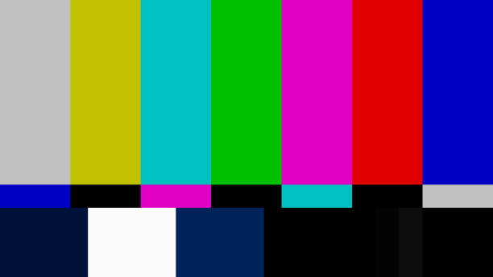

Robot Dashboard
Environmental Sensors
IMU-Sensor
Yaw:
–
°
Pitch:
–
°
Roll:
–
°
Ultrasonic Range
Raw:
–
cm
Filt:
–
cm
Front Laser Distance
Dist:
–
mm
Battery
Battery:
–
mV
Network
RSSI:
–
dBm
Camera

IP-Camera →
–
Status →
Initializing…
Quality →
–
Date/Time →
–
Movement & Output
Drive
Drive Mode:
–
Throttle:
–
Turn:
–
Speed R:
–
Speed L:
–
Headlight:
–
%
Encoders
Enc R:
–
Enc L:
–
Rev R:
–
Rev L:
–
Dist R:
–
mm
Dist L:
–
mm
Camera Tower
Tilt:
–
°
Pan:
–
°
LED:
–
FPV Camera:
–